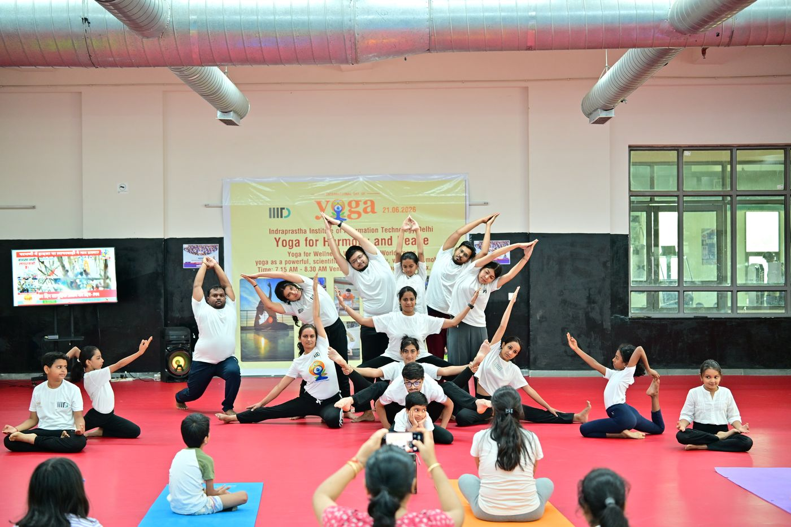
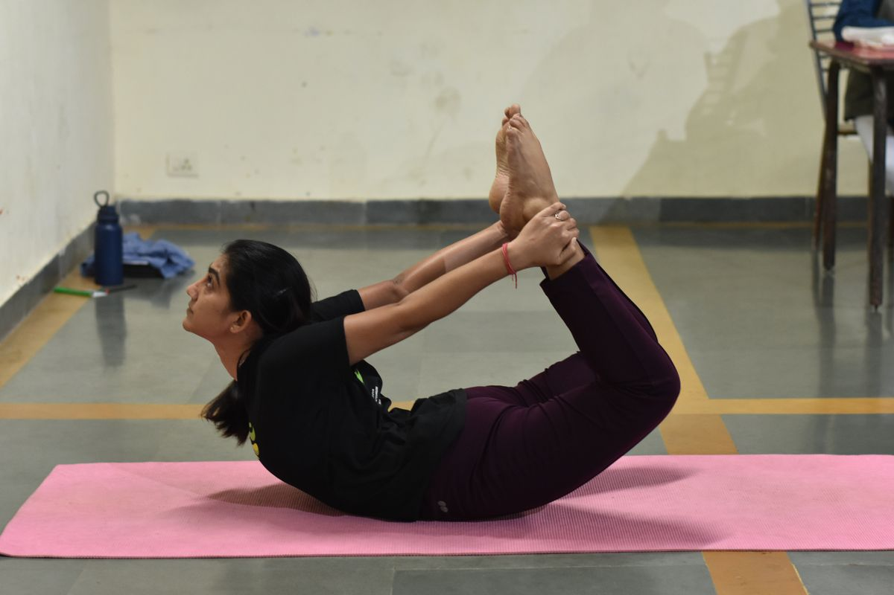
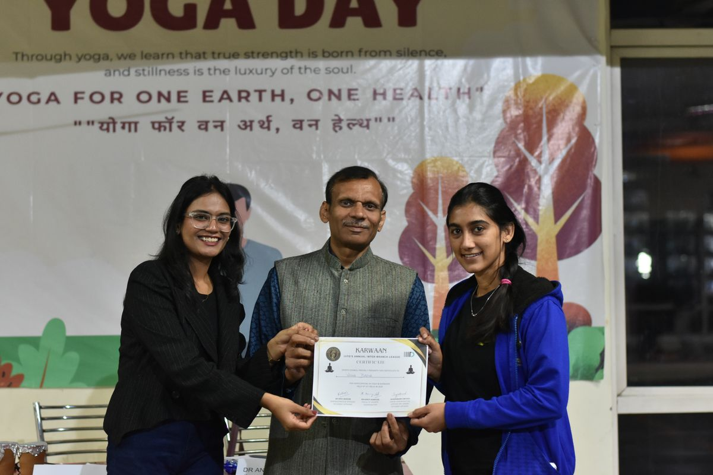
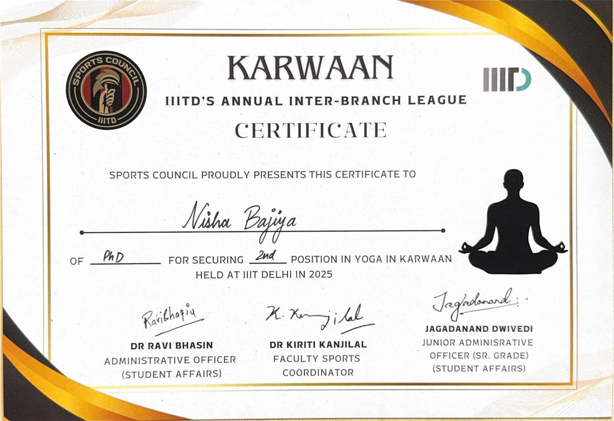
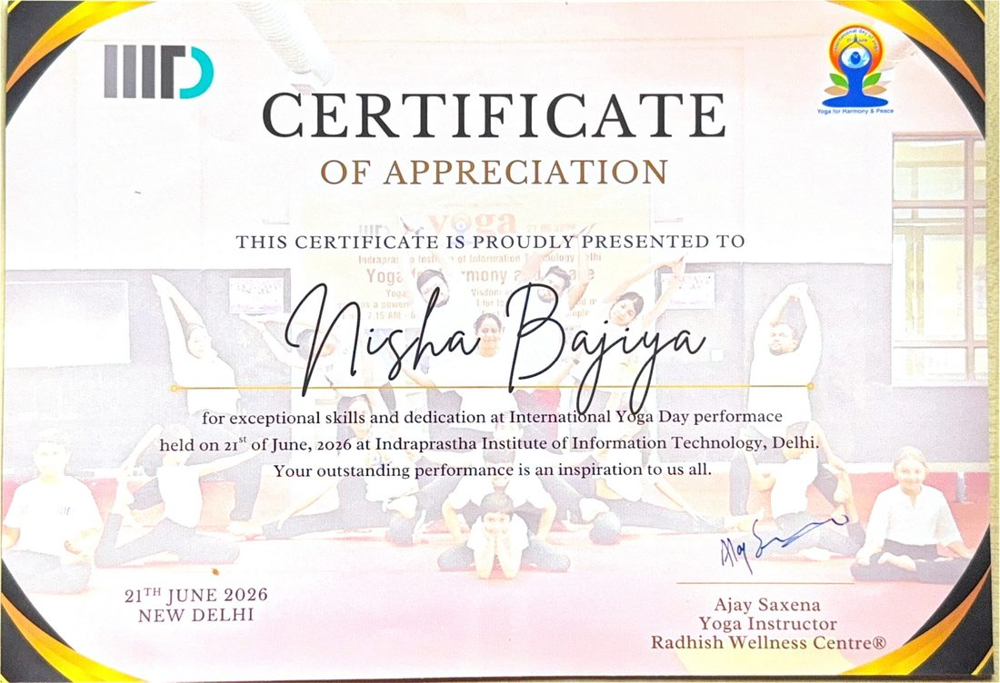
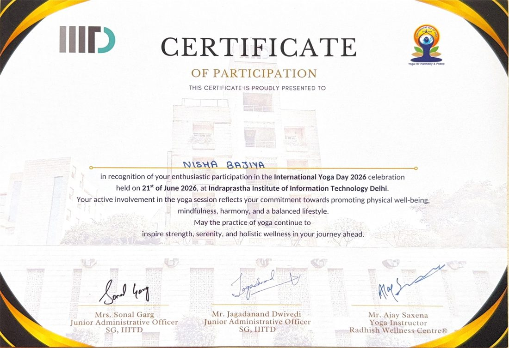
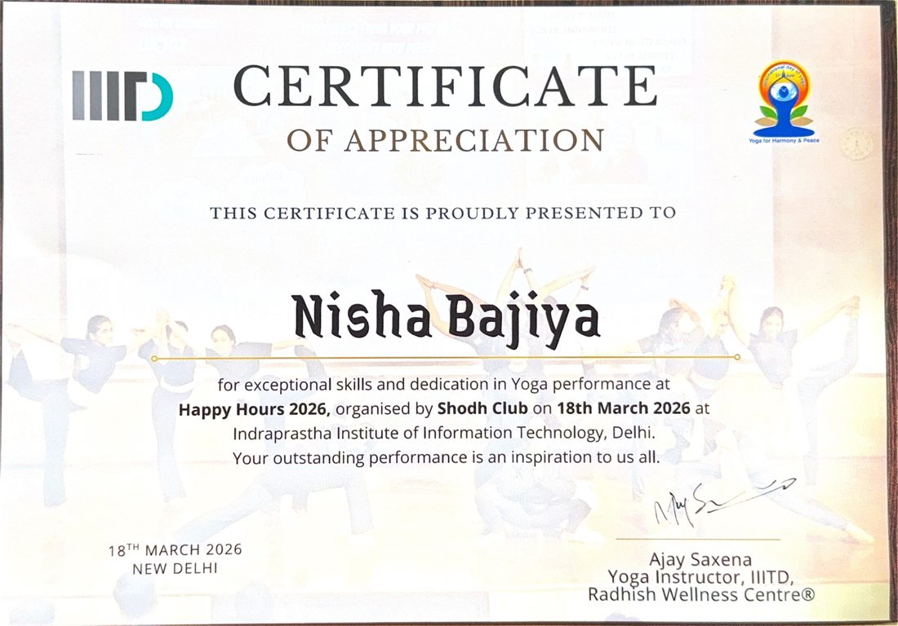
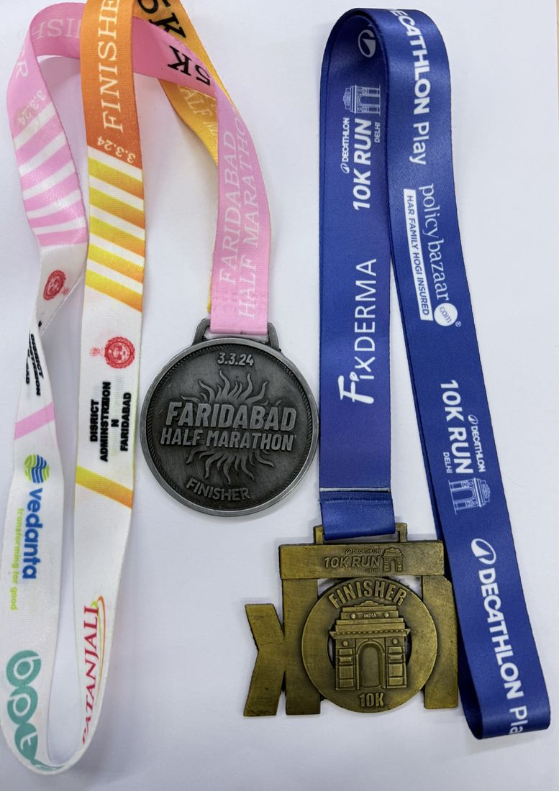
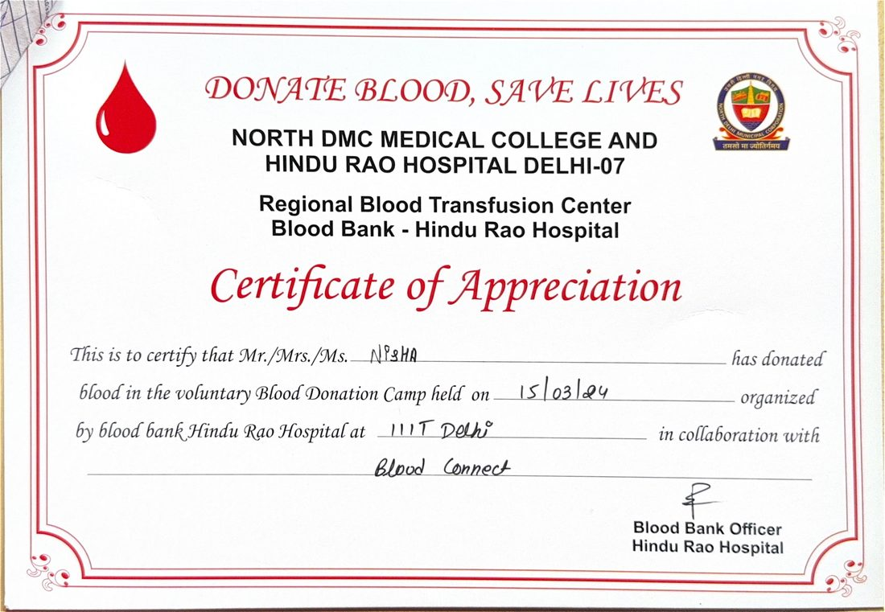

Activities
Life beyond research
Interests and practices that support sustained, thoughtful scientific work.
Yoga
Attention, balance, and resilience.
Yoga is part of my regular wellbeing practice. It provides a deliberate space for movement, focus, and balance alongside the analytical demands of research.
Photos

International Yoga Day performance, IIIT-Delhi (21 June 2026)
Yoga practice — bow pose
Karwaan certificate presentation, IIIT-Delhi (2025)Certificates

Karwaan, IIIT-Delhi inter-branch league (2025) — 2nd position in Yoga
International Yoga Day (21 June 2026) — Certificate of Appreciation for performance
International Yoga Day (21 June 2026) — Certificate of Participation
Happy Hours 2026 (18 March 2026) — Certificate of Appreciation for yoga performanceMarathon
Endurance, discipline, and pace.
Completed a 5 km run at the Faridabad Half Marathon (3 March 2024) and a 10 km run at the Decathlon 10K Run, Delhi (22 September 2024).

Finisher medals — Faridabad Half Marathon (3 March 2024) and Decathlon 10K Run, Delhi (22 September 2024)Volunteering
Giving back.
Voluntary blood donation at the IIIT-Delhi camp organized with Hindu Rao Hospital (March 2024).

Voluntary blood donation camp at IIIT-Delhi (15 March 2024) — Hindu Rao Hospital blood bankLab Gallery
Moments from the lab.
A look behind the scenes — the desk, the team, and the everyday of doing computational biology research.